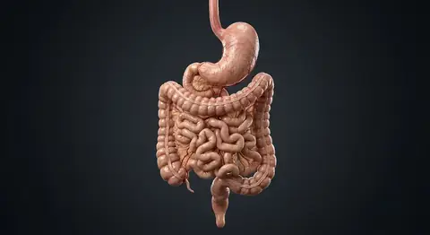
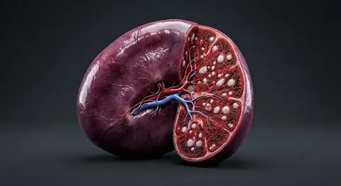

ORGAN → UNDER THE LENS
Hepatic lobule cutaway
Tap to compare the organ region with a tissue-level teaching illustration.
Read about Hepatic lobule & sinusoids ↓As the largest internal organ in the body, the liver sits beneath the right diaphragm and processes nearly every nutrient absorbed from the digestive tract. In this illustrated guide to human liver anatomy, we examine 20 documented structures—including right lobe, left lobe, caudate lobe, quadrate lobe—linking regional topography, tissue architecture, physiological mechanisms, and clinical reasoning.
 Right lobeQuadrate lobeGallbladderCystic ductCommon bile ductFalciform ligamentHepatic veinsLeft lobeCaudate lobeHepatic artery properHepatic portal veinInferior vena cava
Right lobeQuadrate lobeGallbladderCystic ductCommon bile ductFalciform ligamentHepatic veinsLeft lobeCaudate lobeHepatic artery properHepatic portal veinInferior vena cavaAs the largest internal organ in the body, the liver sits beneath the right diaphragm and processes nearly every nutrient absorbed from the digestive tract. The liver receives blood twice over — oxygenated from the hepatic artery and nutrient-rich from the portal vein — and mixes them in the sinusoids between plates of hepatocytes. Each hepatocyte performs hundreds of jobs: making albumin and clotting factors, conjugating bilirubin, storing glycogen and vitamins, and detoxifying drugs through the cytochrome P450 system. Bile, made continuously, is concentrated in the gallbladder and released into the duodenum to emulsify fat. The liver is also the only visceral organ that can regenerate: removing 70% leaves a liver that regrows to full size. Within the human body, the liver (Hepar) is situated in right hypochondrium & epigastrium, under the diaphragm, receives arterial perfusion via dual: hepatic artery (25%) + hepatic portal vein (75%), and is innervated by hepatic plexus (vagus + sympathetic coeliac fibres).
The right lobe (Lobus dexter) is the larger lobe, four to six times the volume of the left, occupying the right hypochondrium. Its diaphragmatic surface is smooth and convex. Physiologically, the right lobe carries most of the hepatic mass and function. Structurally, the left lobe (Lobus sinister) comprises thinner and flatter, lying in the epigastrium and reaching across to the left. Separated from the right lobe on the diaphragmatic surface by the falciform ligament. Physiologically, the left lobe supplies the left half of the functional liver. The caudate lobe (Lobus caudatus) is a small lobe on the posterior surface between the IVC and the ligamentum venosum, draining directly into the IVC. Physiologically, the caudate lobe governs has independent vascular supply and biliary drainage. Anatomically, the quadrate lobe (Lobus quadratus) lies on the visceral surface between the gallbladder fossa and the fissure for the ligamentum teres. Physiologically, the quadrate lobe governs functionally part of the left hemiliver. The falciform ligament (Ligamentum falciforme) is a sickle-shaped fold of peritoneum attaching the liver to the anterior abdominal wall and diaphragm; its free edge carries the ligamentum teres (obliterated umbilical vein). Physiologically, the falciform ligament anchors the liver and divides the anatomical lobes on the diaphragmatic surface. The gallbladder (Vesica biliaris) is a 7–10 cm pear-shaped sac on the visceral surface of the right lobe, with fundus, body and neck. Its wall concentrates bile up to tenfold. Physiologically, the gallbladder stores and concentrates bile, releasing it into the duodenum when fat arrives (CCK-mediated).
Clinically, regarding the right lobe, its inferior edge is what you palpate below the costal margin in hepatomegaly. From a diagnostic standpoint, in the left lobe, in cirrhosis the left and caudate lobes often hypertrophy while the right lobe atrophies. In clinical pathology involving the caudate lobe, it hypertrophies in Budd–Chiari syndrome, and its size relative to the right lobe is a CT sign of cirrhosis. Medical evaluation of the quadrate lobe also notes that together with the caudate lobe it defines the surgical anatomy of the portohepatic segments.
Connected study pathways in this atlas: Hepatic lobule · liver microanatomy, Stomach & intestines, Pancreas.
These are educational cutaways, not literal magnifications of an organ pixel or laboratory slides. A ring marks the approximate tissue region; part-specific lines appear only where identifiable.
Tap to compare the organ region with a tissue-level teaching illustration.
Read about Hepatic lobule & sinusoids ↓These 20 structures describe anatomy related to the chapter’s regional illustration. Each entry separates location, function and a clinical point.
The larger lobe, four to six times the volume of the left, occupying the right hypochondrium. Its diaphragmatic surface is smooth and convex.
What it doesCarries most of the hepatic mass and function.
Clinical connectionIts inferior edge is what you palpate below the costal margin in hepatomegaly.
Thinner and flatter, lying in the epigastrium and reaching across to the left. Separated from the right lobe on the diaphragmatic surface by the falciform ligament.
What it doesSupplies the left half of the functional liver.
Clinical connectionIn cirrhosis the left and caudate lobes often hypertrophy while the right lobe atrophies.
A small lobe on the posterior surface between the IVC and the ligamentum venosum, draining directly into the IVC.
What it doesHas independent vascular supply and biliary drainage.
Clinical connectionIt hypertrophies in Budd–Chiari syndrome, and its size relative to the right lobe is a CT sign of cirrhosis.
On the visceral surface between the gallbladder fossa and the fissure for the ligamentum teres.
What it doesFunctionally part of the left hemiliver.
Clinical connectionTogether with the caudate lobe it defines the surgical anatomy of the portohepatic segments.
A sickle-shaped fold of peritoneum attaching the liver to the anterior abdominal wall and diaphragm; its free edge carries the ligamentum teres (obliterated umbilical vein).
What it doesAnchors the liver and divides the anatomical lobes on the diaphragmatic surface.
Clinical connectionIn portal hypertension the ligamentum teres can recanalise and cause a periumbilical caput medusae.
A 7–10 cm pear-shaped sac on the visceral surface of the right lobe, with fundus, body and neck. Its wall concentrates bile up to tenfold.
What it doesStores and concentrates bile, releasing it into the duodenum when fat arrives (CCK-mediated).
Clinical connectionGallstones (cholelithiasis) cause biliary colic; a stone impacted in the neck gives acute cholecystitis with Murphy's sign.
The spiral-valved duct joining the gallbladder neck to the common hepatic duct.
What it doesTwo-way channel: bile enters the gallbladder for storage and leaves it after a fatty meal.
Clinical connectionIts spiral valves of Heister make cannulation during ERCP tricky.
Formed by union of common hepatic and cystic ducts; runs in the free edge of the lesser omentum, behind the first part of the duodenum and into the pancreatic head to the ampulla.
What it doesDelivers bile to the duodenum for fat emulsification.
Clinical connectionA stone here causes obstructive jaundice, pale stools and dark urine; with infection, ascending cholangitis.
Branch of the coeliac trunk (via the common hepatic), supplying oxygenated blood and running in the portal triad.
What it doesProvides ~25% of hepatic blood flow but ~50% of its oxygen.
Clinical connectionIt is the dominant supply to tumours, which is why chemoembolisation (TACE) via the hepatic artery works.
Formed behind the pancreatic neck by the splenic and superior mesenteric veins; carries nutrient-rich, deoxygenated blood from gut, spleen and pancreas.
What it doesDelivers 75% of hepatic blood and everything absorbed from the gut for first-pass processing.
Clinical connectionPortal hypertension (cirrhosis) causes oesophageal varices, splenomegaly and ascites.
Three short veins (right, middle, left) draining the liver directly into the IVC at its superior surface.
What it doesReturn processed blood to the heart.
Clinical connectionTheir obstruction defines Budd–Chiari syndrome: painful hepatomegaly, ascites and jaundice.
Grooves a deep fossa on the posterior liver surface; the liver partly surrounds it.
What it doesCarries hepatic outflow to the right atrium.
Clinical connectionBecause the liver wraps it, major liver trauma can tear the IVC with catastrophic bleeding.
Hexagonal units ~1 mm across: plates of hepatocytes radiating from a central vein, separated by sinusoids lined with endothelium and Kupffer macrophages; portal triads (artery, vein, bile duct) sit at the corners.
What it doesBlood flows from triad to central vein while bile flows the opposite way, from canaliculi to the triad bile duct.
Clinical connectionZone 3 (around the central vein) is most vulnerable to ischaemia and paracetamol toxicity; zone 1 to viral hepatitis.
Small portal vein branch delivering nutrient-rich splanchnic blood to sinusoids.
What it doesFeeds liver parenchyma.
Clinical connectionPortal obstruction can raise portal pressure.
Terminal hepatic artery branch carrying oxygenated blood.
What it doesAdds oxygen to sinusoidal flow and supplies biliary structures.
Clinical connectionNot the same as portal venous inflow.
Cholangiocyte-lined duct traveling with arterial and portal venous branches.
What it doesReceives bile from canalicular/ductular route.
Clinical connectionDuct injury causes cholestatic patterns.
Connective-tissue region carrying portal venule, hepatic arteriole and bile duct plus nerves/lymphatics.
What it doesOrganizes inflow and bile outflow at lobular margin.
Clinical connectionTriad diagrams omit additional vessels/lymphatics.
Terminal hepatic venule at center of classical lobule.
What it doesCollects sinusoidal blood toward hepatic veins.
Clinical connectionZone 3 near its side is vulnerable to low oxygen.
Wide, discontinuous capillary channel between plates of hepatocytes.
What it doesAllows blood–hepatocyte exchange en route to central vein.
Clinical connectionFibrosis can impair sinusoidal exchange.
Fenestrated endothelial layer lining hepatic sinusoids.
What it doesFacilitates plasma exchange into space of Disse.
Clinical connectionCapillarization reduces permeability in disease.
Short answers grounded in the structures described above. Use the illustrated guide for anatomical context.
The liver processes nutrients, makes bile and many blood proteins, stores glycogen and participates in drug and toxin metabolism. Its blood arrives from both the portal vein and hepatic artery.
Most of the liver lies beneath the diaphragm in the right upper abdomen, with a smaller part extending across the midline.
The gallbladder is a pear-shaped sac on the liver’s visceral surface; it stores and concentrates bile by absorbing water and electrolytes.
The hepatic portal vein forms behind the neck of the pancreas and enters the liver at the porta hepatis.
Bile produced by hepatocytes flows through canaliculi toward bile ductules in portal tracts, opposite to blood flow toward central veins.
Follow these connected structures and body systems in the illustrated atlas.

Stomach & intestinesA continuous muscular digesting and absorbing tube from the acid-churning stomach through the villus-lined small intestine to the water-reclaiming colon.↗ PancreasA dual-function retroperitoneal gland: exocrine acini secrete bicarbonate and digestive enzymes into the duodenum while endocrine islets regulate blood glucose.↗
PancreasA dual-function retroperitoneal gland: exocrine acini secrete bicarbonate and digestive enzymes into the duodenum while endocrine islets regulate blood glucose.↗
SpleenTucked beneath the left ribs, the spleen pairs immune white-pulp lymphoid follicles with filtering red-pulp cords that recycle aging red blood cells.↗General anatomy references and related source chapters for continued study. These links do not make the digital illustrations clinical images or certify every anatomical variant.
This educational page is not medical advice and has not undergone formal clinical peer review. Spotted an error? Contact the editor.
Open the realistic interactive plate, label lines, focus view and self-test.